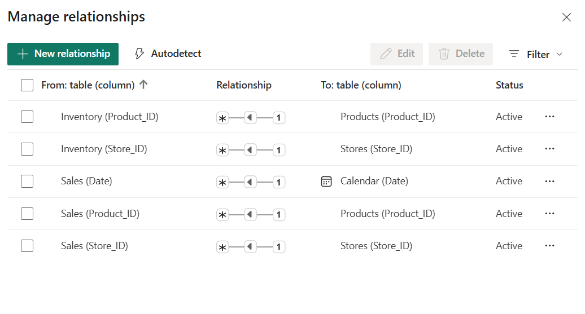
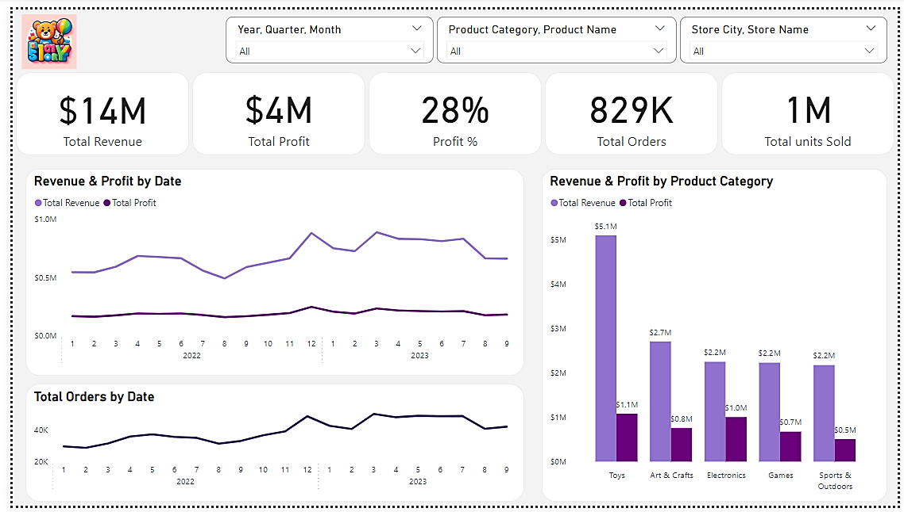
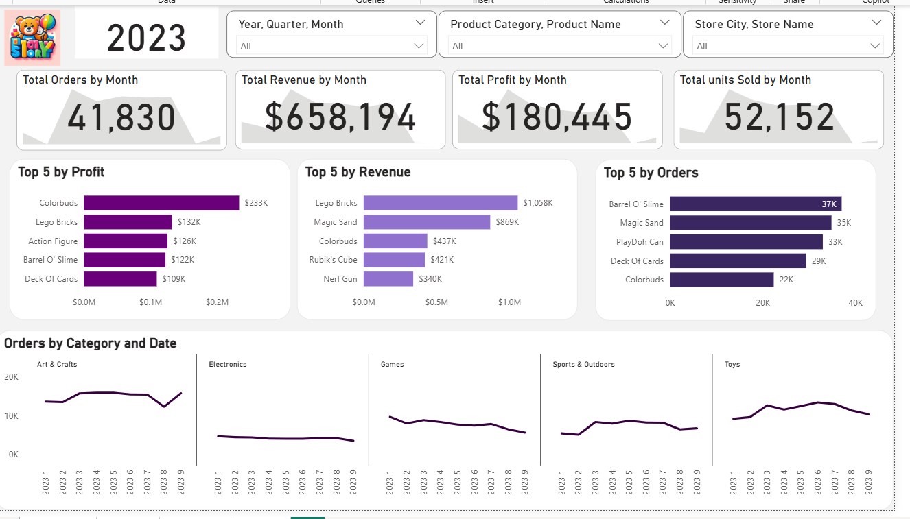
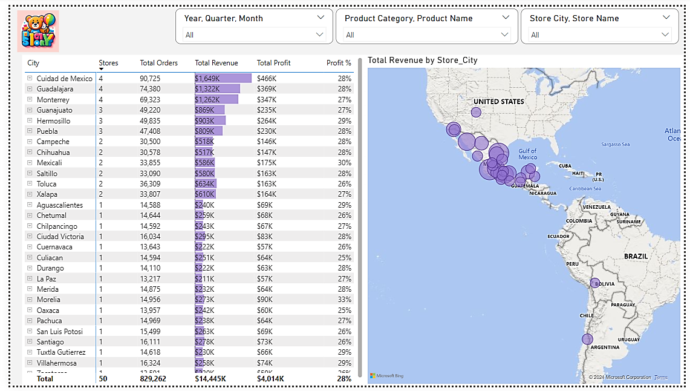
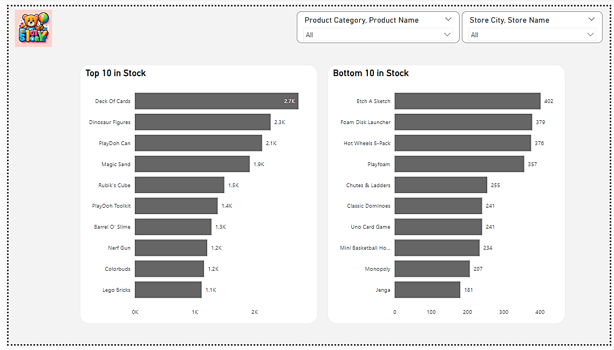

לפני שמתחילים
בתרגיל תתחברו לחמישה מקורות נתונים של רשת חנויות צעצועים, תבצעו ניקוי והתאמת טיפוסים, תוסיפו עמודות מחושבות, תבנו מודל נתונים עם קשרים ומדדי DAX, ולבסוף תרכיבו דשבורד מלא ב-Power BI.
Calendar · Inventory · Products · Sales · Stores
טבלת השדות בהמשך העמוד
Power Query · Power BI Desktop · DAX
קובץ PBIX
חלק א · קבלת הנתונים והיכרות עם המבנה
התחברות לחמשת מקורות הנתונים
עבור כל אחד מהקבצים לחצו Get Data → Web והדביקו את הכתובת המתאימה (רשימת הכתובות מיד למטה). עבור כל קובץ שנו את שם השאילתה כך שנדע לזהות את הטבלה, ובחרו Transform Data — לא בטעינה ישירה (Load).
| טבלה | שדה | תיאור | סוג נתון |
|---|---|---|---|
| Products | Product_ID | Product ID | מספר שלם |
| Products | Product_Name | Product name | טקסט |
| Products | Product_Category | Product Category | טקסט |
| Products | Product_Cost | Product cost ($USD) | מטבע |
| Products | Product_Price | Product retail price ($USD) | מטבע |
| Inventory | Store_ID | Store ID | מספר שלם |
| Inventory | Product_ID | Product ID | מספר שלם |
| Inventory | Stock_On_Hand | Stock quantity of the product in the store | מספר שלם |
| Stores | Store_ID | Store ID | מספר שלם |
| Stores | Store_Name | Store name | טקסט |
| Stores | Store_City | City in Mexico where the store is located | טקסט |
| Stores | Store_Location | Location in the city where the store is located | טקסט |
| Stores | Store_Open_Date | Date when the store was opened | תאריך |
| Sales | Sale_ID | Sale ID | מספר שלם |
| Sales | Date | Date of the transaction | תאריך |
| Sales | Store_ID | Store ID | מספר שלם |
| Sales | Product_ID | Product ID | מספר שלם |
| Sales | Units | Units sold | מספר שלם |
| Calendar | Date | Calendar date | תאריך |
בדיקת כותרות וטיפוסי נתונים
עבור כל שאילתה ודאו שהכותרות מופיעות כראוי ושסוג העמודה שזוהה תואם לנתון בפועל; אם לא — תקנו. בדקו את איכות ואפיון כל עמודה דרך View → Column quality / Column distribution / Column profile, ושימו לב שהתצוגה מתייחסת לכלל הנתונים ולא רק ל-1,000 השורות הראשונות.
חלק ב · טבלת Products
התאמת טיפוסי נתונים
שנו את העמודות Product_Cost ו-Product_Price לסוג מטבע (Currency).
מפתח מזהה למוצר
שנו את Product_ID לסוג מספר שלם. מכיוון שמדובר במפתח מזהה של המוצר, ודאו באמצעות View שאין בו ערכים ריקים או כפולים.
מחיר בהנחה ורווח למוצר
החברה מציעה מחיר מכירה בהנחה של 15% ללקוחות שמבצעים קניות גדולות. הוסיפו לטבלת Products עמודה מותאמת אישית (Add Column → Custom Column):
לאחר מכן הוסיפו עמודת רווח למוצר:
שנו את הפורמט של שתי העמודות ל-$, והזיזו את עמודת Profit למקומה מיד לאחר Product_Price.
חלק ג · טבלת Stores
ניקוי שם החנות
בעמודת Store_Name מופיעה בכל שם חנות הקידומת "Maven". הסירו אותה כך שיישאר רק שם החנות עצמו.
חלק ד · טבלת Calendar
תיקון פורמט התאריך
נסו לשנות את סוג העמודה Date לתאריך — Power Query יזרוק שגיאה.
הוספת עמודות נגזרות מהתאריך
לטבלת Calendar הוסיפו את העמודות הבאות: שם היום, מספר היום, שם החודש, מספר החודש, השנה והרבעון.
חלק ה · טבלת Sales
עמודה מותנית — Unit_Type
הוסיפו עמודה מותנית (Add Column → Conditional Column) בשם Unit_Type, לפי כמות היחידות שנקנו (Units):
- עד 1 יחידה (כולל) → single
- מעל 1 ועד 10 יחידות (כולל) → up to 10
- מעל 10 יחידות → above 10
- בכל מקרה אחר → other
חלק ו · מודל נתונים ומדדי DAX
בדיקת הקשרים במודל
ודאו שהקשרים בין הטבלאות במודל שלכם תואמים לתרשים הבא:

עמודות מחושבות בטבלת Sales
הוסיפו לטבלת Sales שתי עמודות מחושבות (DAX):
רשימת המדדים
צרו את המדדים (Measures) הבאים:
מיקום הקשרים במודל
חלק ז · בניית הדשבורד
לפני שמתחילים, אפשר להעיף מבט בדשבורד הסופי כפי שהוא אמור להיראות בפועל: קישור לדשבורד המפורסם.
בנו דוח בן 4 עמודים, עם שלושה סלייסרים משותפים בראש כל עמוד: Year, Quarter, Month · Product Category, Product Name · Store City, Store Name.
עמוד 1 · סקירה כללית
חמישה כרטיסי KPI: Total Revenue, Total Profit, Profit %, Total Orders, Total units Sold. מתחתם: גרף קווי Revenue & Profit לאורך זמן, גרף קווי Total Orders לאורך זמן, וגרף עמודות Revenue & Profit לפי Product Category.

עמוד 2 · ניתוח חודשי
הגדירו פילטר ברמת העמוד (Page-level filter) כך שיוצג רק נתוני שנת 2023 — דרך חלונית ה-Filters מימין.
ארבעה ויזואלים מסוג KPI* לפי חודש (הזמנות, הכנסה, רווח, יחידות), שלושה גרפי Top 5 (לפי רווח, לפי הכנסה, לפי מספר הזמנות), וגרפי Small Multiples** של הזמנות לפי קטגוריה וזמן.

עמוד 3 · חנויות ומיקום
טבלה מפורטת לפי עיר (מספר חנויות, הזמנות, הכנסה, רווח, אחוז רווח) לצד מפה* עם בועות המייצגות הכנסה לפי Store_City.

עמוד 4 · מלאי
שני גרפי עמודות אופקיים: 10 המוצרים המובילים במלאי (Top 10 in Stock) ו-10 המוצרים הנמוכים ביותר במלאי (Bottom 10 in Stock).

סיום ושמירה
ודאו שקיימות כל השאילתות הבאות ללא שגיאות:
- Calendar
- Inventory
- Products
- Sales
- Stores
ודאו שבמודל (Model view) מוגדרים הקשרים בין הטבלאות בהתאם לתרשים בחלק ו', ושכל שמונת המדדים קיימים וללא שגיאות. ודאו שנבנו ארבעת עמודי הדשבורד כמתואר בחלק ז'.
שמרו את קובץ ה-PBIX בהתאם להנחיות ההגשה.